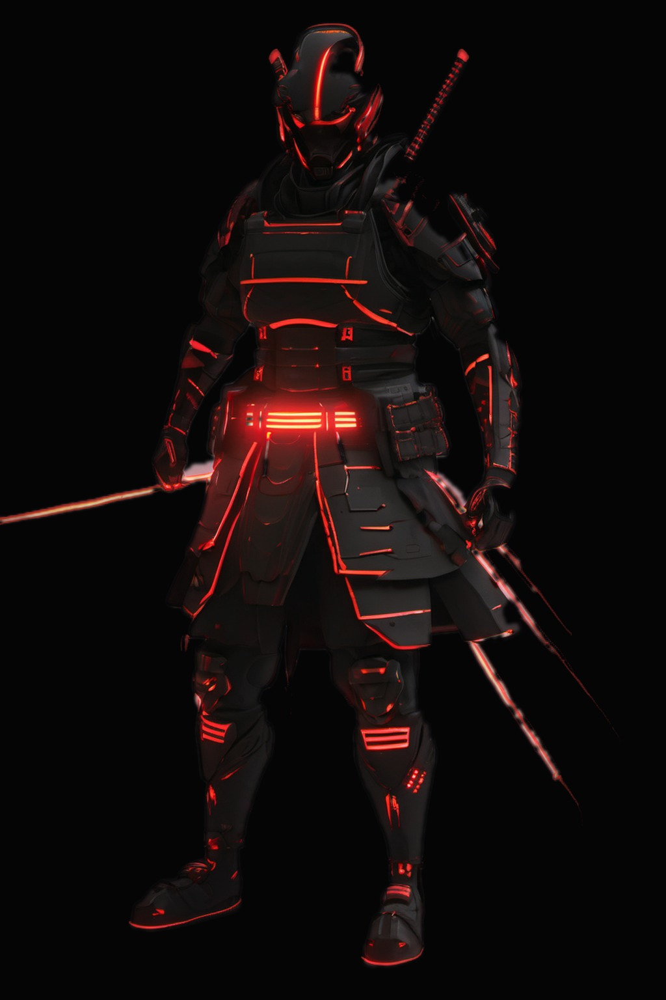

Autonomous triage
Reads every alert, merges duplicates and drops the noise. Your analysts start with twelve real cases, not nineteen hundred raw alerts.
Inspect program →Ronin Grid deploys autonomous defence programs across endpoint, identity and cloud. They find the intrusion, cut it off and hand your analysts a closed case, in milliseconds.

Each program guards one surface and reports to the same grid, so nothing slips between them.
Reads every alert, merges duplicates and drops the noise. Your analysts start with twelve real cases, not nineteen hundred raw alerts.
Inspect program →Spots stolen sessions and impossible logins, then revokes the token before it is used.
Inspect program →Maps every bucket, role and open port, and flags drift the moment it appears.
Inspect program →Isolates the host, kills the process and rolls back the change, with one auditable decision.
Inspect program →Links every signal into one attack story, so you see the path, not the pieces.
Inspect program →Every action written to a tamper-evident log, ready for your auditor.
Inspect program →One cycle, start to finish, in less time than it takes to read this line.
Endpoint, identity, cloud and network events from 140+ integrations, joined in real time.
Policy-bound AI weighs the evidence and records exactly why it acted.
Host isolated, token revoked, change rolled back. The case closes itself.
“The first week, the grid closed more cases than my team did in a month. Now we only see what matters.”
“Every decision is logged and explainable. That is what got it past our board.”
See your own environment defended live, in a 20-minute demo.